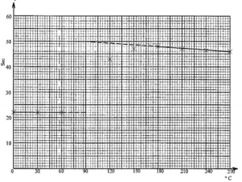

Chemistry paper 3
1. You are provided with:
• 0.30 g solid A, magnesium metal
• Hydrochloric acid, solution B
• 0.15 sodium carbonate, solution C
• Methyl orange indicator
You are required to determine the:
• Enthalpy change, AH per mole, of the reaction between magnesium metal and excess hydrocholoric acid.
• Concentration in moles per litre of hydrochloric acid, solution B.
Procedure I
(i) Using a burette, measure 50.0 cm3 of solution B and place it in a 100 ml plastic beaker.
(ii) Measure the temperature of solution B in the beaker after every 30 seconds and record it in Table 1.
(iii) At the 90th second, add all of the solid A provided into the beaker, stir with the thermometer and continue measuring and recording the temperature after every 30 seconds. Complete Table 1. Retain the mixture in the beaker for use in procedure II.
Table 1
(a) Plot a graph of temperature (vertical axis) against time on the grid provided. (3 marks)
(b) Determine the change in temperature, AT, for the reaction. Show the working on the graph.
AT . (1 mark)
(c) Calculate the heat change, in joules, for the reaction. Assume that for the solution, specific heat capacity is 4.2 Jg K 1 and density is 1.0gcm 3. (2 marks)
(d) The relative atomic mass of magnesium is 24.0. Calculate the enthalpy change, AH, of the reaction per mole of magnesium. Indicate the sign of AH. (1 mark)
Procedure H
(i) Fill a clean burette with the 0.15M sodium carbonate, solution C.
(ii) Place all of the mixture in the beaker from procedure I into a 250ml volumetric flask. Add distilled water to the mark and shake thoroughly. Label the mixture as solution D.
(iii) Using a pipette filler, pipette 25.0 cm3 of solution D into a 250 ml conical flask and add 2 drops of methyl orange indicator.
(iv) Titrate solution D in the conical flask with the sodium carbonate, solution C and record the readings in Table 2.
(v) Repeat steps (iii) and (iv) and complete Table 2.
Table 2
(b) Calculate the number of moles of:
(i) sodium carbonate used.
(ii) hydrochloric acid in the 25.0 cm3 of solution D.
(iii) hydrochloric acid in the 250 cm3 of solution D.
(iv) hydrochloric acid that reacted with magnesium metal.(1 mark)
(v) total number of moles of hydrochloric acid in the 50.0cm3, solution B. (1 mark)
(c) Determine the concentration of hydrochloric aeid in moles per litre, in solution B. (1 mark)
2. You are provided with solid E. Carry out the following tests and record the observations and inferences .
(a) Place about one-third of solid E in a dry test-tube. Heat the solid strongly and test any gas with both blue and red litmus papers. (b) Place the remaining amount of solid E in a boiling tube. Add about 15 cm3 of distilled water and shake. Divide the mixture into four test tubes each containing about 2 cm3 .
(i) To the first portion, add three or four drops of dilute hydrochloric acid (1 mark)
(ii) To the second portion, add two or three drops of aqueous barium nitrate.
(iii) To the third portion, add aqueous sodium hydroxide dropwise until in excess. (iv) To the fourth portion, add aqueous ammonia dropwise until in excess. 3. You are provided with solid F. Carry out the following tests and record the observations and inferences .
(a) Place about one-third of solid F on a clean metallic spatula and burn it in a Bunsen burner flame.
(b) Place the remaining amount of solid F in a boiling tube. Add about 10 cm3 of distilled water and shake. Use the mixture for tests (i) to (iii) below.
(i) Using about 2 cm3 of the mixture in a test-tube, determine the pH using universal indicator paper and chart.
(ii) To about 2 cm3 of the mixture in a test tube, add two or three drops of acidified potassium manganate(VII).
(iii) To about 2 cm3 of the mixture in a test-tube add two or three drops of bromine
• Complete table ----------(1 mark)
• Use of decimals ( Either whole numbers, one decimal place as 0.5 (1 mark)
• Accuracy ----------------½
• Trends - constant readings from t=0 sec to t=60sec, continuous rise in temperature readings from t=120 sec to maximum followed by a drop ½
a).

• Scale-------(½ mark)
• Labeling of axes-----(½ mark)
On graph paper
b).△T=(50.0 - 22.0)oc =28.0o
• Plotting (1 mark)
• Curve / lines (1 mark)
c).Heat change = 4.2 x 50 x 28.0 Joules
= 5880 Jou1es
d).Moles of magnesium = 30 0.0125/24
Enthalpy change △H= —5880/0.0125 x 1 J mol-1
= - 470400 J mol-1 OR - 470.4 kJ mol-1
-ve sign must be shown otherwise penalize
• Use of decimals ( 1 or 2) consistently (1 mark)
For 2 decimal places, the second decimal should be 0 or 5
• Accuracy ( any one value compared to the school value that is within 0.10 cmm or 0.20 cm3 of the school value) (1 mark)
• Principles of averaging — average of volumes that are within -L 0.10cm to 0.20 cm3 from each other.
• Final accuracy- should be within 0.10 cm3 to 0.20 cm3 of the school value.
a).Average volume of solution C used
23.50 + 23.50 cm3/2 = 23.50 cmcm3
b).Moles of sodium carbonate = 0.15average titre/1000
23.50 x 0.15/ 1000
— 3.525 x10-3
(ii) Reaction ratio is 1 mole Na2 COC3 : 2 moles HCl
Moles of hydrochloric acid in 25.0cm' = 2 x Answer in b(i) =2x3.525 x 10-3
= 7.05 x10 -3
(nf) Moles of hydrochloric acid in 250 cm° = Answer in b(ii) x 250 2
— 0.0705
(iv) Mg * 2HCl—+ Mg Cl, + H2
Reaction ratio is Mg : HCP = 1 : 2
Moles of magnesium — 0.0125
Moles of hydrochloric acid = 2 x 0.0125 M
= 0 025
(v) Total number of moles of hydrochloric acid in 50 cm3 of solution B = Answer in b(iii) + answer in b(iv)
= 0.0705 + 0.025
= 0.0955
Concentration of hydrochloric acid in moles per litre of solution B Answer in b(v) x i000 50
0.0955 x1000 Moles per litre
= 1.91 mol dm-3